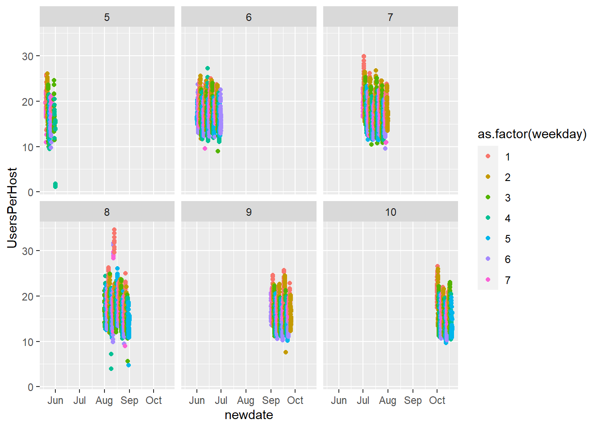
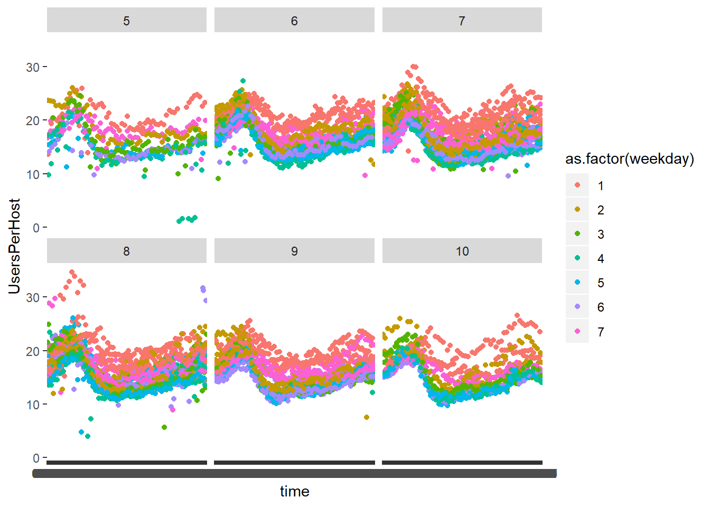
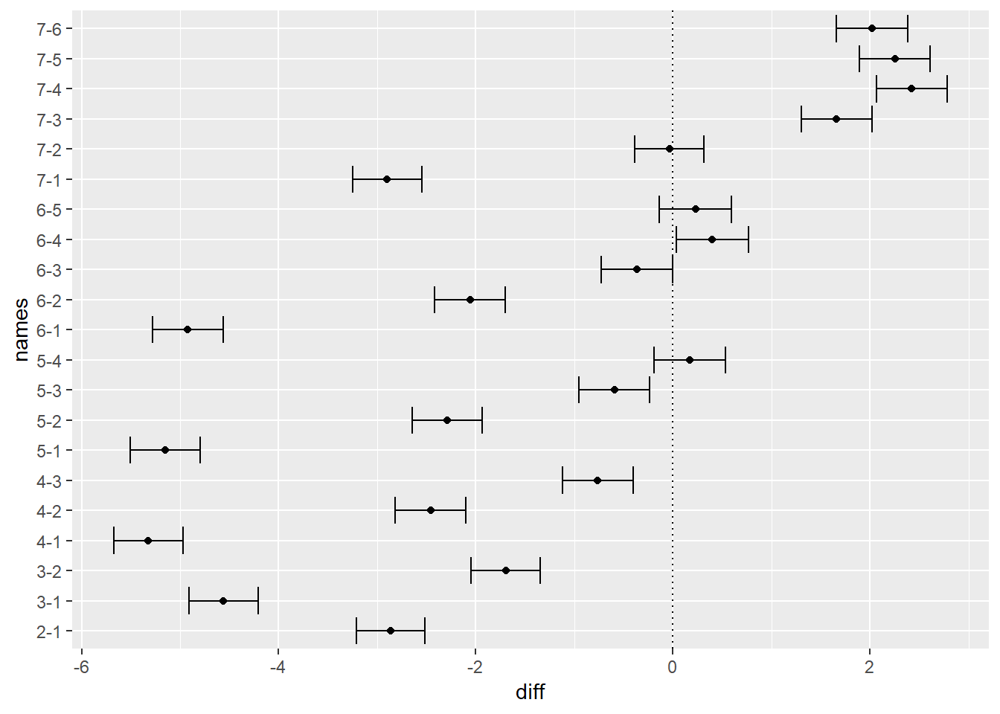
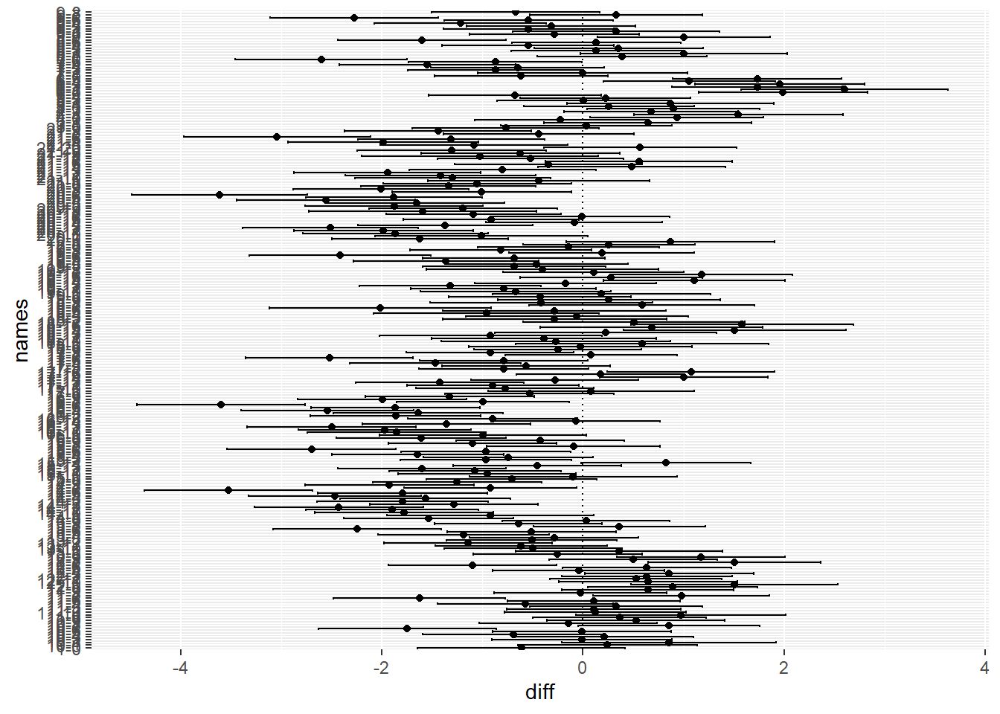
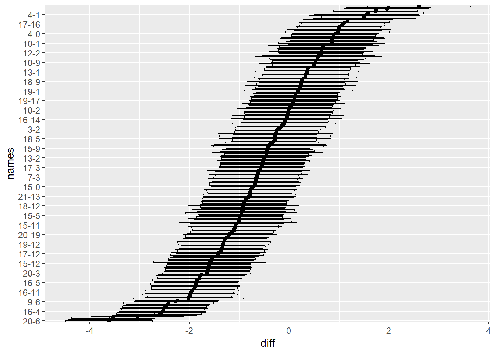

Introduction
A colleague of mine asked me to help him explore a dataset in R. He has little experience in R, so I will provide as much detail as I can in this exploration. My goal here is to make this post both ‘learn-able’ and ‘replicable’.
Install and/or load necessary packages
if (!require("tidyverse")) install.packages("tidyverse")## Warning: package 'tidyverse' was built under R version 3.6.1## Warning: package 'ggplot2' was built under R version 3.6.1## Warning: package 'tidyr' was built under R version 3.6.1## Warning: package 'dplyr' was built under R version 3.6.1if (!require("readr")) install.packages("readr")
if (!require("lubridate")) install.packages("lubridate")
if (!require("stringi")) install.packages("stringi")Set Working Directory If Necessary
# setwd("//filepath/of/your/csvfile")Read in data
We use read_csv from the readr package because it does a better job than the base read.csv command at recognizing data types from our csv file.
data = read_csv("data.csv")## Parsed with column specification:
## cols(
## `Date Time (GMT)` = col_character(),
## DotW = col_character(),
## Hosts = col_double(),
## Users = col_double(),
## `Users Per Host` = col_double(),
## weekno = col_double(),
## desdate = col_double()
## )We notice that it read in our data column as a character string. We’ll have to do some work to fix that, but lets to some further exploration for now.
Exploratory Data Anlaysis
First, we will look at our data summary
summary(data)## Date Time (GMT) DotW Hosts Users Users Per Host weekno desdate
## Length:7519 Length:7519 Min. : 82 Min. : 1042 Min. : 1.078 Min. :1.000 Min. :42875
## Class :character Class :character 1st Qu.:1146 1st Qu.:18585 1st Qu.:14.327 1st Qu.:2.000 1st Qu.:42914
## Mode :character Mode :character Median :1286 Median :21483 Median :16.421 Median :3.000 Median :42950
## Mean :1286 Mean :21372 Mean :16.799 Mean :2.657 Mean :42950
## 3rd Qu.:1423 3rd Qu.:24269 3rd Qu.:19.040 3rd Qu.:3.000 3rd Qu.:42986
## Max. :1921 Max. :41216 Max. :34.664 Max. :3.000 Max. :43028This confirms that our date is in the wrong format. It appears everything else is fine.
The structure command is also a valuable tool. This shows us how R interprets the data and if there are any hidden levels or format issues in which we are unaware.
str(data)## Classes 'spec_tbl_df', 'tbl_df', 'tbl' and 'data.frame': 7519 obs. of 7 variables:
## $ Date Time (GMT): chr "5/20/2017 0:35" "5/20/2017 2:19" "5/20/2017 2:24" "5/20/2017 3:11" ...
## $ DotW : chr "Sat" "Sat" "Sat" "Sat" ...
## $ Hosts : num 1368 1355 1351 1344 1375 ...
## $ Users : num 27084 26674 26424 28796 29589 ...
## $ Users Per Host : num 19.8 19.7 19.6 21.4 21.5 ...
## $ weekno : num 1 1 1 1 1 1 1 1 1 1 ...
## $ desdate : num 42875 42875 42875 42875 42875 ...
## - attr(*, "spec")=
## .. cols(
## .. `Date Time (GMT)` = col_character(),
## .. DotW = col_character(),
## .. Hosts = col_double(),
## .. Users = col_double(),
## .. `Users Per Host` = col_double(),
## .. weekno = col_double(),
## .. desdate = col_double()
## .. )One issue we notice is there there areparenthesis () in the Date Time (GMT) column name. We will run into issues calling this column in the future because we will have to put the name in ‘single quotes’. To allow us to directly call the column name, we will rename this column, as well as several others for similar reasons.
An ounce of prevention…
names(data) = c("DateTimeGMT", "DotW","Hosts", "Users", "UsersPerHost", "weekno", "desdate")
names(data)## [1] "DateTimeGMT" "DotW" "Hosts" "Users" "UsersPerHost" "weekno" "desdate"Much better!
Handle the Date column
In order for R to read DateTimeGMT as a Date and not as a character string, we’ll use several commands from the lubridate package.
It will be best if we translate our time into ‘POSIXct’.
- POSIX time is the number of seconds that have elapsed since January 1, 1970.
- ct stands for ‘calendar time’.
This should give you insite as to how R is storing the information. Now we need to tell R the order of our characters.
Here is a snipit of what it looks like.
data$DateTimeGMT[1:10]## [1] "5/20/2017 0:35" "5/20/2017 2:19" "5/20/2017 2:24" "5/20/2017 3:11" "5/20/2017 3:36" "5/20/2017 4:07"
## [7] "5/20/2017 4:37" "5/20/2017 5:02" "5/20/2017 5:27" "5/20/2017 5:52"We must tell R where the months, days, years, hours, minutes, etc are located in the character vector we provide.
data$newdate = as.POSIXct(data$DateTimeGMT, "%m/%d/%Y %H:%M", tz = "UTC")
data$newdate[1:10]## [1] "2017-05-20 00:35:00 UTC" "2017-05-20 02:19:00 UTC" "2017-05-20 02:24:00 UTC" "2017-05-20 03:11:00 UTC"
## [5] "2017-05-20 03:36:00 UTC" "2017-05-20 04:07:00 UTC" "2017-05-20 04:37:00 UTC" "2017-05-20 05:02:00 UTC"
## [9] "2017-05-20 05:27:00 UTC" "2017-05-20 05:52:00 UTC"class(data$newdate)## [1] "POSIXct" "POSIXt"Nice - we can see how it is being stored and that the data time is correct.
Visualise
Lets take a first look at at our UsersPerHost over time.
ggplot(data, aes(x=newdate, y = UsersPerHost)) +
geom_point()
There is clearly something going on here. Lets explore more deeply by creating a column for day of the week and month. We’ll plot the data based on these different levels.
data$weekday = wday(data$newdate)
data$month = month(data$newdate)A good tool for seeing how data changes based on certain factors is by changing the colors based on a level of a specific factor.
Plot it
Lets see how UsersPerHost changes based off of month.
ggplot(data, aes(x=newdate, y = UsersPerHost, color = weekday)) +
geom_point()
Notice how our points are shaded by a fluid scale instead of having one color per day of the week. This is because R sees weekday as a continuous variable. Lets fix that by adding as.factor(weekday) to our color argument.
ggplot(data, aes(x=newdate, y = UsersPerHost, color = as.factor(weekday))) +
geom_point()
That looks better – and it appears that each level of weekday has an impact on UsersPerHost.
Maybe it would be better to see this effect by month?
ggplot(data, aes(x=newdate, y = UsersPerHost, color = as.factor(weekday))) +
geom_point() +
facet_wrap(~month)
What’s Wrong? Our data points are all clumped together. That’s because we are faceting over each month (good), but our x axis contains the entire time scale over each facet (bad). We have to remove the month value from our x and maintain only the time element. We will do that by extracting the time from our DateTimeGMT column.
time = stri_sub(data$DateTimeGMT, -5,-1)
data$time = gsub(" ",0, time)Lets try the plot again using time as our x variable.
ggplot(data, aes(x=time, y = UsersPerHost, color = as.factor(weekday))) +
geom_point() +
facet_wrap(~month)
There certainly appears to be a relationship.
Statistical Analysis
Lets test this using a pairwise.t.test
test = pairwise.t.test(data$UsersPerHost,as.factor(data$weekday), p.adjust.method = "bonferroni")The null hypothesis is that the UsersPerHost are equal to each other across all months. Everywhere the P Values are <.05, we reject the null hypothesis and determine that the UsersPerHost for that specific month to month combination are different.
Lets make this information more conveyable. We’ll do that with a graphic with a little different test.
The following code will execute an ANOVA (analysis of variance) and extract the Tukey comparisons. The Tukey results show us the estimated mean of the level and it provides a confidence interval of the true mean.
results = aov(UsersPerHost~as.factor(weekday), data = data)
tukey = TukeyHSD(results)Lets put this information in a datafame that we can plot using ggplot.
plotting = data.frame(names = rownames(tukey$`as.factor(weekday)`),
diff = tukey$`as.factor(weekday)`[,1],
ymin = tukey$`as.factor(weekday)`[,2],
ymax = tukey$`as.factor(weekday)`[,3])
plotting## names diff ymin ymax
## 2-1 2-1 -2.86319494 -3.21018235 -2.516207527
## 3-1 3-1 -4.55973264 -4.91048577 -4.208979503
## 4-1 4-1 -5.32234667 -5.67562184 -4.969071512
## 5-1 5-1 -5.15195058 -5.50443012 -4.799471047
## 6-1 6-1 -4.92126477 -5.27784546 -4.564684093
## 7-1 7-1 -2.89897050 -3.24989374 -2.548047250
## 3-2 3-2 -1.69653770 -2.05022084 -1.342854558
## 4-2 4-2 -2.45915174 -2.81533616 -2.102967312
## 5-2 5-2 -2.28875565 -2.64415096 -1.933360335
## 6-2 6-2 -2.05806984 -2.41753303 -1.698606645
## 7-2 7-2 -0.03577556 -0.38962741 0.318076287
## 4-3 4-3 -0.76261404 -1.12246796 -0.402760118
## 5-3 5-3 -0.59221794 -0.95129081 -0.233145076
## 6-3 6-3 -0.36153214 -0.72463169 0.001567416
## 7-3 7-3 1.66076214 1.30321686 2.018307421
## 5-4 5-4 0.17039609 -0.19114077 0.531932957
## 6-4 6-4 0.40108190 0.03554549 0.766618307
## 7-4 7-4 2.42337618 2.06335645 2.783395909
## 6-5 6-5 0.23068581 -0.13408172 0.595453332
## 7-5 7-5 2.25298009 1.89374104 2.612219127
## 7-6 7-6 2.02229428 1.65903039 2.385558162Plot Tukey Comparisons
ggplot(data = plotting, aes(x = names, y = diff, ymin = ymin, ymax = ymax)) +
geom_point() +
geom_errorbar() +
coord_flip() +
geom_hline(yintercept = 0, linetype = "dotted")
We should draw two conclusions.
- If the error bar overlaps
0, we conclude theUsersPerHostare not different across that month pair. - Every month pair whose error bar does not overlap is different from all other months.
Analysis by week
Lets plot the UsersPerHost by week.
First, we must create a column for week. The code below identifies each week in the dataset and numbers them 1 through n.
data$week = trunc((data$newdate - min(data$newdate))/dweeks(1))Now for the plot by week.
ggplot(data, aes(x=time, y = UsersPerHost, color = as.factor(weekday))) +
geom_point() +
# geom_boxplot() +
# geom_smooth() +
facet_wrap(~as.factor(week))
Much like the analysis above, lets see if there’s a differnece between any week pair.
options(scipen=999)
test = pairwise.t.test(data$UsersPerHost,as.factor(data$week), p.adjust.method = "bonferroni")
round(test$p.value[,c(1:15)],3)## 0 1 2 3 4 5 6 7 8 9 10 11 12 13 14
## 1 1.000 NA NA NA NA NA NA NA NA NA NA NA NA NA NA
## 2 1.000 0.604 NA NA NA NA NA NA NA NA NA NA NA NA NA
## 3 1.000 1.000 1.000 NA NA NA NA NA NA NA NA NA NA NA NA
## 4 0.023 0.000 1.000 0.039 NA NA NA NA NA NA NA NA NA NA NA
## 5 1.000 0.558 1.000 1.000 1.000 NA NA NA NA NA NA NA NA NA NA
## 6 0.000 0.000 0.000 0.000 0.002 0.000 NA NA NA NA NA NA NA NA NA
## 7 1.000 1.000 0.074 1.000 0.000 0.064 0.000 NA NA NA NA NA NA NA NA
## 8 1.000 0.106 1.000 1.000 1.000 1.000 0.000 0.006 NA NA NA NA NA NA NA
## 9 1.000 1.000 1.000 1.000 0.000 1.000 0.000 1.000 0.889 NA NA NA NA NA NA
## 10 1.000 0.909 1.000 1.000 1.000 1.000 0.000 0.151 1.000 1.000 NA NA NA NA NA
## 11 1.000 0.179 1.000 1.000 1.000 1.000 0.000 0.014 1.000 1.000 1.000 NA NA NA NA
## 12 0.033 0.000 1.000 0.058 1.000 1.000 0.001 0.000 1.000 0.000 1.000 1.000 NA NA NA
## 13 1.000 1.000 1.000 1.000 0.000 1.000 0.000 1.000 1.000 1.000 1.000 1.000 0.000 NA NA
## 14 0.000 0.300 0.000 0.000 0.000 0.000 0.000 0.028 0.000 0.000 0.000 0.000 0.000 0.000 NA
## 15 0.595 1.000 0.011 0.364 0.000 0.009 0.000 1.000 0.001 1.000 0.026 0.002 0.000 1.000 0.098
## 16 0.000 0.119 0.000 0.000 0.000 0.000 0.000 0.007 0.000 0.000 0.000 0.000 0.000 0.000 1.000
## 17 1.000 1.000 0.185 1.000 0.000 0.160 0.000 1.000 0.016 1.000 0.360 0.037 0.000 1.000 0.004
## 18 1.000 1.000 1.000 1.000 0.477 1.000 0.000 1.000 1.000 1.000 1.000 1.000 0.661 1.000 0.000
## 19 1.000 1.000 1.000 1.000 0.000 1.000 0.000 1.000 0.264 1.000 1.000 0.465 0.000 1.000 0.003
## 20 0.000 0.140 0.000 0.000 0.000 0.000 0.000 0.011 0.000 0.000 0.000 0.000 0.000 0.000 1.000
## 21 0.012 1.000 0.000 0.007 0.000 0.000 0.000 1.000 0.000 0.678 0.000 0.000 0.000 0.454 1.000We will explore the same ANOVA as before with Tukey results. This time, however, since there are 231 pairwise comparisons, I will only display a sample of 20 weeks that are different from each other.
options(scipen=999)
results = aov(UsersPerHost~as.factor(week), data = data)
tukey = TukeyHSD(results)
helper = as.data.frame(round(tukey$`as.factor(week)`[which(tukey$`as.factor(week)`[,4]<.001),],3)) %>%
sample_n(20)
helper %>%
mutate(weekpair = rownames(helper)) %>%
arrange(desc(diff)) %>%
select("weekpair", "p adj", "diff", "lwr", "upr")## weekpair p adj diff lwr upr
## 1 9 0.001 1.180 0.276 2.084
## 2 13 0.000 -1.252 -2.091 -0.412
## 3 19 0.000 -1.295 -2.267 -0.323
## 4 16 0.000 -1.324 -2.162 -0.487
## 5 7 0.000 -1.361 -2.281 -0.442
## 6 2 0.000 -1.424 -2.257 -0.591
## 7 15 0.000 -1.596 -2.728 -0.463
## 8 12 0.000 -1.601 -2.439 -0.762
## 9 6 0.000 -1.607 -2.451 -0.763
## 10 18 0.000 -1.655 -2.532 -0.777
## 11 3 0.000 -1.792 -2.635 -0.949
## 12 8 0.000 -1.851 -2.737 -0.965
## 13 11 0.000 -1.878 -2.762 -0.994
## 14 20 0.000 -1.971 -2.828 -1.114
## 15 10 0.000 -1.996 -2.833 -1.159
## 16 1 0.000 -2.243 -3.078 -1.408
## 17 14 0.000 -2.273 -3.109 -1.437
## 18 5 0.000 -2.417 -3.319 -1.515
## 19 4 0.000 -2.513 -3.386 -1.640
## 20 17 0.000 -3.525 -4.364 -2.686Lets tranform this information into a datafame that we can plot.
tukeydata = as.data.frame(tukey$`as.factor(week)`)
plotting = tukeydata %>%
mutate(names = rownames(tukeydata), ymin = lwr, ymax = upr) %>%
select(names, diff, ymin, ymax) %>%
arrange(diff)Lets view a sample of 20 rows.
plotting %>%
sample_n(20) %>%
arrange(diff)## names diff ymin ymax
## 1 21-6 -3.04161752 -3.96981242 -2.11342261
## 2 16-12 -2.49897277 -3.33712708 -1.66081846
## 3 21-12 -1.94320310 -2.87188933 -1.01451688
## 4 16-13 -1.35456470 -2.19109315 -0.51803624
## 5 19-12 -1.31894878 -2.22150758 -0.41638998
## 6 21-10 -1.29526368 -2.26735194 -0.32317542
## 7 14-13 -1.28196178 -2.12015917 -0.44376439
## 8 15-11 -1.07244146 -1.92997776 -0.21490517
## 9 20-7 -1.00773729 -1.89995235 -0.11552223
## 10 20-15 -0.91256949 -1.78703147 -0.03810751
## 11 17-10 -0.77603952 -1.65744358 0.10536455
## 12 15-0 -0.70872189 -1.55358205 0.13613827
## 13 19-3 -0.46052198 -1.36773906 0.44669511
## 14 18-2 -0.28220661 -1.39662786 0.83221463
## 15 16-14 -0.07260292 -0.91351710 0.76831127
## 16 19-17 0.10503016 -0.79403846 1.00409878
## 17 9-7 0.33057589 -0.52609269 1.18724447
## 18 4-2 0.67739971 -0.18968727 1.54448670
## 19 8-1 1.00152112 -0.02546822 2.02851046
## 20 17-14 1.00239091 0.16632295 1.83845888Plots of Pairwise Compaisons
ggplot(data = plotting, aes(x = names, y = diff, ymin = ymin, ymax = ymax)) +
geom_point() +
geom_errorbar() +
coord_flip() +
geom_hline(yintercept = 0, linetype = "dotted")
This is very difficult to read. Lets make two fixes:
- Since our data is scattered everywhere, lets reorder our plot based off the difference in means between weeks.
- Since our y labels are hard to read, lets create a vector that will allow us to show the label for every 7th value.
plotting$order = 1:nrow(plotting)
plotting$names = factor(plotting$names, levels=unique(plotting$names[order(plotting$order)]), ordered=TRUE)
plothelp = plotting$names[c(TRUE,FALSE,FALSE,FALSE,FALSE,FALSE,FALSE)]Now the plot.
ggplot(data = plotting, aes(x = names, y = diff, ymin = ymin, ymax = ymax)) +
geom_point() +
geom_errorbar() +
coord_flip() +
geom_hline(yintercept = 0, linetype = "dotted") +
scale_x_discrete(breaks=plothelp,
labels=plothelp)